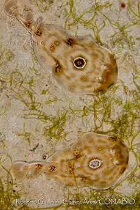
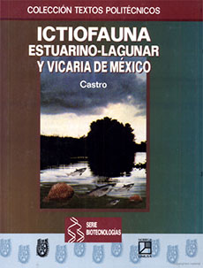

Referencias
José Luis Castro Aguirre
1943 - 2011
José Luis fue uno de los pioneros en hacer estudios sobre la clasificación, la ecología y la distribución de los peces marinos que penetran a las aguas continentales de México, en particular de los tiburones y las rayas.
Durante su formación académica, estudió biología en la Escuela Nacional de Ciencias Biológicas del Instituto Politécnico Nacional (1967), más adelante la maestría (1974) y el doctorado (1986) en esa misma institución.
Ya en su vida laboral, colaboró como investigador en el Instituto Nacional de Investigaciones Biológico-Pesqueras (INIBP), organismo encargado asesorar científica y tecnológicamente los proyectos pesqueros y de acuicultura del país en aquella época.
José Luis se dedicó a impulsar la creación de centros de investigación y de docencia que estuvieran acordes con los programas más vanguardistas para el desarrollo de las ciencias marinas, la pesca y la oceanografía. Por ejemplo, participó en la planeación del proyecto del Centro Interdisciplinario de Ciencias Marinas (CICIMAR) del Instituto Politécnico Nacional en Baja California Sur, así como en la transformación del INIBP al Instituto Nacional de Pesca, hoy día un órgano gubernamental. En estas instituciones ocupó cargos administrativos.
Interesado por compartir sus conocimientos y su pasión por el estudio de los peces, José Luis también se dedicó a la docencia; dio clases en varias instituciones, entre ellas la UNAM, la ENCB y el CICIMAR.
Por la década de 1970 se realizaron numerosas expediciones oceanográficas en el Pacífico noroeste mexicano y el golfo de California, en las cuales, José Luis participó planeándolas y dirigiéndolas. Asimismo, aprovechó para organizar las primeras recolectas sistemáticas de ejemplares de peces marinos, mismas que dieron lugar a lo que ahora es la Colección Ictiológica del CICIMAR.
Fue miembro de la Sociedad Mexicana de Zoología y de la Sociedad Ictiológica Mexicana.
Mis favoritos
- 
- Raya de Ocelo (Diplobatis ommata)
- Foto: Roberto G. Chávez Arce / Banco de imágenes, CONABIO
Mis lugares
Mis ideas
- 
- José Luis Castro Aguirre (1999). Ictiofauna, estuarino-lagunar y vacaria de México. Centro Interdisciplinario de Ciencias Marinas IPN, La Paz, Baja California. Ed. Limusa